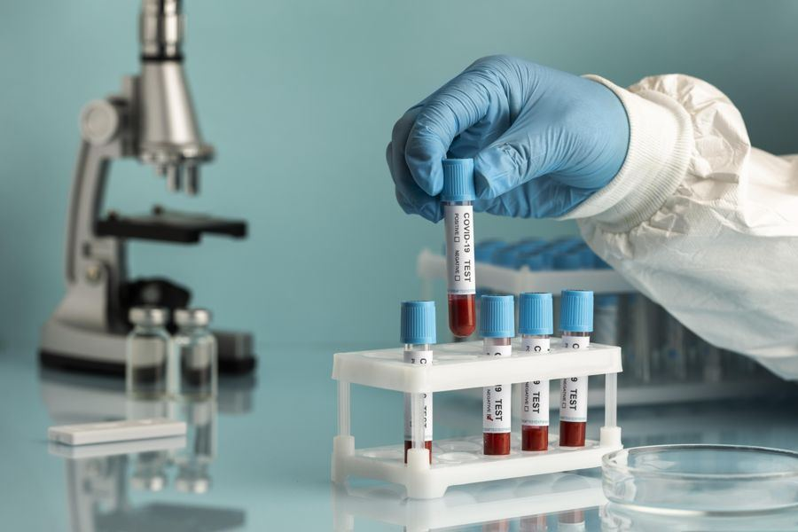

Every sample, accounted for.
Qrynto Tech is laboratory software that follows each sample from the collection chair to the patient's WhatsApp. Fewer mix-ups, faster reports, and a lab you can read at a glance.
- NABL-ready audit trails
- Live in 3–5 days
- Support 7 days a week
- Collected at front deskBarcode QT-24817 printed
- Received in labScanned by Priya, bench 2
- Running on analyserResults importing
- Approved by pathologistDr. S. Joshi
- Report sentWhatsApp and SMS
What changes on day one
Same lab, same team. Far less chasing, retyping and guessing.
I run a…
Pick the kind of lab you run to see what Qrynto Tech does for you.

For the standalone pathology lab
Run registration, sample tracking, results and reports on one record, with billing that never misses a test.
- Front desk check-in and billing in one step
- Results straight from your analysers
- Reports sent to patients automatically
For labs with several branches
Keep every branch on the same tests, rates and report templates, and see all of them from one dashboard.
- Central rate lists and templates
- Tracked sample transfers between branches
- Branch-wise and combined reports
For collection centres
Register, bill and barcode at the point of collection, then hand samples to the processing lab with nothing lost.
- Barcode labels printed at the draw
- Live status of every sample sent
- Reports delivered to your patients
For hospital laboratories
Keep in-house testing organised and get validated results to clinicians quickly, with a full audit trail.
- Range checks and pathologist approval
- Role-based access for staff
- NABL-ready records
For research and testing labs
Structured, traceable records for work where every step needs to be accounted for.
- Complete history for every sample
- Individual logins and permissions
- Secure cloud storage with daily backups
Eight modules, one patient record
Start with what you need. Every module shares the same data, so nothing is entered twice.
A sample's day, start to finish
Five steps, each one recorded with a name and a time.
Register
Patient, tests and payment captured at the desk in one step.
Collect
A unique barcode label goes on the tube at the draw.
Analyse
Results arrive from the analyser and are range-checked.
Approve
The pathologist reviews flagged values and signs off.
Deliver
The PDF report reaches the patient and doctor on WhatsApp.
shorter turnaround time at Nitin Surgical & Diagnostics
“The team deserves praise for consistently delivering excellent and reliable services. Our turnaround time dropped by nearly 40% after we switched.”
- 10+labs running their day on Qrynto Tech
- 99.9%uptime commitment on the cloud platform
- 3–5working days from sign-up to going live
- 7days a week of phone, email and WhatsApp support
“Good experience, easy way to manage our samples. It has made our entire workflow smoother. The pricing is fair and service response is incredible.”
“The entire process from booking to result delivery is incredibly smooth. I've recommended it to every lab owner I know.”
Which labs is Qrynto Tech for?
How long does it take to go live?
Does it connect to our analysers?
Is it ready for NABL accreditation?
How much does it cost?
See it with your own tests
A 30-minute walkthrough using your test menu and rate list. No obligation.
- Call+91 91369 24323
- WhatsAppMessage our team
- Email info@qryntotech.in
- HoursEvery day, 9 AM to 6 PM
Book a demo
Tell us a little about your lab. We'll set up a walkthrough with your own tests.